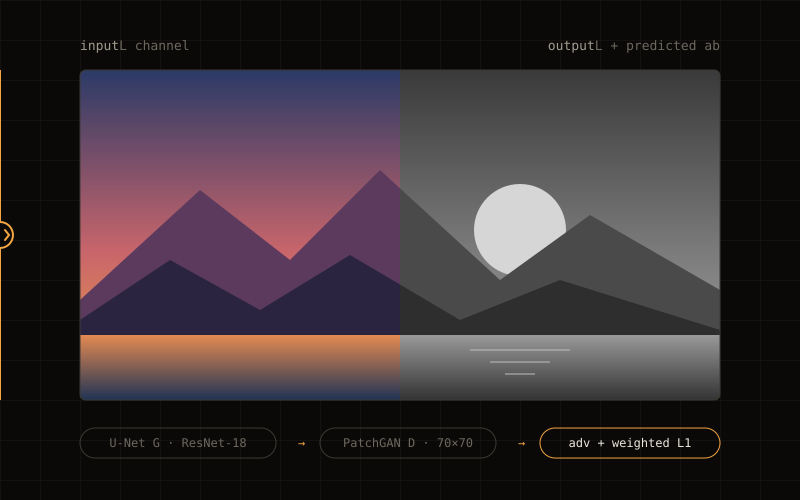

Robot learning
Imitation learning and vision-language-action models. SmolVLA vs ACT on a real SO-101 arm, trained on demos I collected myself.
> ai / machine learning / robot learning / llms_
AI and machine learning are what I care about most. Lately that means teaching a robot arm to pick things up from demos I recorded myself, then checking honestly whether the model got any better.
I build machine learning for robots. Models that watch a person do a task, then do it themselves.
I'm a Graduate Research Assistant at UMass Dartmouth working on robot learning. I record my own demos on a Hugging Face LeRobot SO-101 arm, fine-tune SmolVLA, a vision language action model with about 450M parameters, and test it against an ACT baseline. I built the rig too: two calibrated cameras on mounts I designed and 3D printed. My degree says data science, but AI and machine learning are the work I want to keep doing.
Imitation learning and vision-language-action models. SmolVLA vs ACT on a real SO-101 arm, trained on demos I collected myself.
Multi-camera perception for the robot, building footprint extraction from 1M+ geospatial records, and a GAN that colorizes photos.
Reproducing BadVLA backdoor attacks to see how robot policies break, and looking at failure modes instead of only success rates.
Building with large language models, LangChain and retrieval-augmented generation.
University of Massachusetts Dartmouth, robot learning
Clove Technologies, Visakhapatnam, India
University of Massachusetts Dartmouth
Task success rate, pick-and-place
SO-101 6-DOF arm, two cameras, self-collected demos
I fine-tuned SmolVLA (about 450M parameters) on my own teleop dataset and put it up against an ACT baseline. Also in here: the vision processing for the two-camera setup and the scripts that make training and evaluation repeatable.

A conditional GAN with a U-Net generator (ResNet-18 backbone) and a 70×70 PatchGAN discriminator, trained for 100 epochs on about 118K COCO images. It predicts color in CIE LAB space using adversarial plus weighted L1 loss. There's a React/Angular web demo so anyone can try it.
View source
Reads sign language gestures live from a webcam. I built it to make it a bit easier for speech-impaired people to communicate.
View source> hover or tap a tool to see where I've used it_
Building robots, vision models, or something that has to ship? Let's talk.
thrushithy@gmail.com